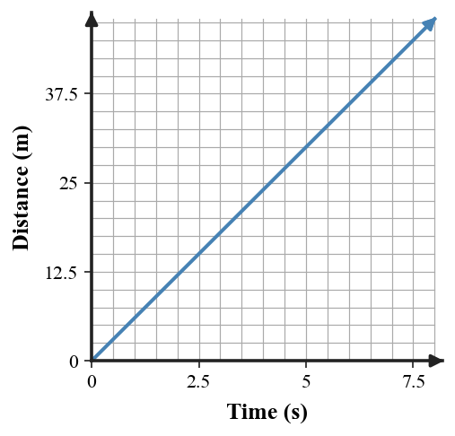

1. What does the unit m/s tell you about how speed is calculated?
2. Distinguish instantaneous speed from average speed in one sentence.
3. Classify each description as scalar or vector: 7 m/s; 7 m/s east.
4. Name the quantity that changes when direction changes even if speed stays fixed.
5. State the condition needed for constant velocity in terms of both speed and direction.
6. A scooter travels 144 m in 12 s. Calculate its average speed.
7. At a constant speed of 9 m/s, how long does a cart take to travel 225 m? Show the relationship used.
8. A van travels 100 km in the first hour and 50 km in the second hour. Determine the average speed for the full two-hour trip using total distance and total time.
9. Use the distance–time graph. Determine the constant speed and explain how you know the speed does not change.

10. A skater moves 4 m/s north, then turns east while keeping the same 4 m/s speed. Compare speed and velocity before and after the turn.
11. A driver argues that a 60 km/h trip average proves the car never exceeded 60 km/h. Explain why the conclusion is not supported and give a possible counterexample.
12. Compare these motions: A moves straight east at 10 m/s; B moves around a curve at 10 m/s. Explain why identical speed values are not enough to conclude identical velocity.
13. Average speed is calculated using
14. Which measurement describes one moment?
15. Which is a complete velocity?
16. Velocity differs from speed because velocity includes
17. Which object can have constant speed but changing velocity?
18. Which situation does NOT have constant velocity?
19. A bus travels 210 km in 3 h. Its average speed is
20. A trip average is 30 km/h. Which statement may still be true?